전산응용기계제도기능사 (2003-03-30 기출문제)
1과목: 기계재료 및 요소
1. 탄소강(0.25%C)의 고온 기계적 성질을 설명한 사항 중 올바르지 않은 것은?
- 200∼300℃ 에서 청열 메짐현상이 발생한다.
- 280∼300℃ 부근에서 인장강도와 경도가 최대로 된다.
- 200∼300℃ 부근에서 연신율 및 단면수축률은 최대가 된다.
- 400℃ 부근에서 충격치는 최소가 된다.
(정답률: 40%)
2. 다음 원소 중 고속도강의 주요 성분이 아닌 것은?
- 니켈
- 텅스텐
- 바나듐
- 크롬
(정답률: 51%)

3. 다음은 보일러용 리벳 이음에 대한 설명이다. 옳은 것은?
- 피치는 대개 리벳팅하는 소재의 길이에 의해 결정된다.
- 원주 방향의 응력은 축방향 응력의 1/2 이다.
- 원통을 반지름 방향의 내압으로 위아래로 분리하려고하는 힘은 강판의 저항력보다 작아야 한다.
- 리벳이음의 세로 이음은 원주 이음보다 약한 것을 써도 좋다.
(정답률: 42%)
4. 다음 중 저속, 소용량의 컨베어, 엘리베이터용으로 사용하는데 가장 적당한 체인은?
- 엇걸이 체인
- 링크 체인
- 롤러 체인
- 사일런트 체인
(정답률: 30%)
5. 지름 240mm 및 360mm의 외접 마찰차에서 중심 거리는?
- 60mm
- 300mm
- 400mm
- 600mm
(정답률: 74%)
6. 납에 대한 설명으로 틀린 것은?
- 수도관으로도 사용된다.
- 모든 산에 약하며 부식된다.
- 방사선의 방어에도 이용된다.
- 4-8% 안티몬을 함유하는 것을 경납 이라한다.
(정답률: 44%)
7. 황동의 합금 원소는 무엇 인가?
- Cu - Sn
- Cu - Zn
- Cu - Al
- Cu - Ni
(정답률: 77%)
8. 비틀림 시험의 목적과 관계없는 것은?
- 비틀림 강도 측정
- 강성 계수 측정
- 연신율 측정
- 비틀림 각 측정
(정답률: 42%)
9. 다음 중 강의 표준조직이 아닌 것은?
- 페라이트
- 마텐자이트
- 시멘타이트
- 펄라이트
(정답률: 41%)
10. 리벳이음을 한 강판에 하중을 가할 때 강판 사이의 리벳단면에 나란히 발생하는 응력은?
- 인장응력
- 전단응력
- 압축응력
- 경사응력
(정답률: 38%)
2과목: 기계가공법 및 안전관리
11. 원동차의 직경이 100mm, 종동차의 직경이 140mm, 원동차의 회전수가 400rpm일 때 종동차의 회전수는?
- 300 rpm
- 200 rpm
- 560 rpm
- 286 rpm
(정답률: 29%)
12. 재료의 전단응력이 35 N/㎜2이고, 키이의 길이가 40㎜, 접선력은 3000 N이면 너비는?
- 1.6㎜
- 1.8㎜
- 2.2㎜
- 2.8㎜
(정답률: 46%)
13. 일반적으로 고온에서 볼 수 있는 것으로 금속이 일정한 하중 밑에서 시간이 걸림에 따라 그 변형이 증가되는 현상은?
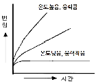
- 피로(fatigue)
- 크리프(creep)
- 허용응력(allowable stress)
- 안전율(safety factor)
(정답률: 51%)
14. 자동차와 철도차량의 현가용으로 사용되는 스프링은?
- 코일 스프링
- 토션바
- 겹판 스프링
- 원통형 스프링
(정답률: 49%)
15. 온도 변화에 따라 선팽창계수나 탄성률 등의 특성이 변화하지 않는 합금강은?
- 내열강
- 쾌삭강(Free cutting steel)
- 불변강(invariable steel)
- 내마멸강
(정답률: 66%)
16. 절삭공구의 수명판정을 하는 데, 그 기준이 되지 않는 것은?
- 마멸량(플랭크 마멸, 크레이터 마멸)이 일정값에 도달한 경우
- 치핑, 파손의 손상을 받을 경우
- 절삭저항이 어느 한도를 넘는 경우
- 구성인선이 발생할 경우
(정답률: 56%)
17. 센터리스 연삭작업에서 장점, 단점에 대한 각각의 설명으로 옳은 것은?
- 장점: 긴 홈이 있는 일감을 연삭할 수 있다.
- 장점: 대형 중량물을 연삭할 수 있다.
- 단점: 연삭숫돌바퀴의 나비보다 긴 일감은 전후이송법으로는 연삭할 수가 없다.
- 단점: 연삭여유가 적으면 안 된다.
(정답률: 39%)
18. 렌즈의 끝 다듬질은 어느 래핑에 속하는가?
- 나사 래핑
- 원통 래핑
- 기어 래핑
- 구면 래핑
(정답률: 56%)
19. KS규격에 의한 안전색과 사용표지의 연결이 잘못된 것은?
- 빨강 - 고도 위험
- 노랑 - 주의
- 파랑 - 진행
- 녹색 - 피난
(정답률: 32%)
20. 절삭제의 사용목적 중 틀리는 것은?
- 절삭열의 제거
- 마찰의 감소
- 공구수명 연장
- 절삭칩의 보호
(정답률: 62%)
21. 드릴 작업에서 구멍을 뚫을 때 걸리는 시간의 계산 공식은 다음 중 어느 것인가? (단, t : 구멍깊이 [㎜], h : 드릴끝 원뿔높이[㎜], v : 절삭속도 [m/min], s : 드릴1회전당 이송거리[㎜/rev], D : 드릴의 지름[㎜]이다.)
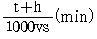
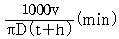
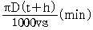
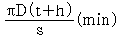
(정답률: 54%)
22. 수직선반(vertical lathe)에 대한 설명 중 틀린 것은?
- 테이블이 수직면 내에서 회전하는 것이다.
- 공구의 길이방향 이송이 수직방향으로 되어 있다.
- 공구대가 터릿식으로 된 수직선반도 있다.
- 일감고정이 쉽고, 안정된 중절삭을 할 수 있다.
(정답률: 28%)
23. 게이지블럭에서 정밀도가 가장 낮은 것은?
- 00급
- 0급
- 1급
- 2급
(정답률: 47%)
24. 니이컬럼형 밀링 머신이 아닌 것은?
- 수평 밀링 머신
- 수직 밀링 머신
- 만능 밀링 머신
- 생산 밀링 머신
(정답률: 66%)
25. CNC공작기계에서 백 래쉬(Back lash)의 오차를 줄이기 위해 사용하는 기계부품은?
- 유니파이 나사
- 볼 스크류
- 사각 나사
- 리드 스크류
(정답률: 51%)
3과목: 기계제도
26. 한국산업규격을 표시한 것은?
- DIN
- JIS
- KS
- ANSI
(정답률: 91%)
27. 그림과 같은 용접 기호 기재 방법 설명으로 바르게 된 것은?
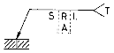
- A:홈 각도
- R:표면 보조기호
- L:특별 지시사항
- S:다듬질 방법 기호
(정답률: 28%)
28. 중앙처리장치(CPU)와 주기억장치 사이에서 원활한 정보의 교환을 위하여 주기억장치의 정보를 일시적으로 저장하는 고속 기억장치는?
- floppy disk
- CD-ROM
- cache Memory
- coprocessor
(정답률: 77%)
29. CAD 시스템으로 도형의 해칭(cross hathing)작업을 하려고 할 때 기본적인 입력 요소가 아닌 것은?
- 해칭선의 각도
- 해칭선 사이의 간격
- 해칭 영역의 지정
- 해칭선의 시작점
(정답률: 60%)
30. 다음 치수 중 원호의 길이를 나타내는 것은?
- □50
- ø50
- t50
(정답률: 87%)
31. 도면에서 사용되는 선 중에서 가는 2점쇄선을 사용하는 것은?
- 치수를 기입하기 위한 선
- 해칭선
- 평면이란 것을 나타내는 선
- 인접부분을 참고로 표시하는 선
(정답률: 73%)
32. 기하공차의 종류 중 자세공차가 아닌 것은?
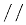
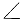
(정답률: 77%)
33. 컴퓨터에서 사용하는 RS-232-C의 용도는 무엇인가?
- 데이터 전송속도 측정
- 디지탈 신호를 아날로그 신호로 변환시키는 장치
- 아날로그 신호를 디지탈 신호로 변환시키는 장치
- 입출력 데이터를 전송
(정답률: 34%)
34. 다음 중 치수기입 원칙에 어긋나는 방법은?
- 관련되는 치수는 되도록 한곳에 모아서 기입한다.
- 치수는 되도록 공정마다 배열을 분리하여 기입한다.
- 중복된 치수 기입을 피한다.
- 치수는 각 투상도에 고르게 분포되도록 한다.
(정답률: 73%)
35. 테이퍼 핀의 호칭법을 바르게 열거한 것은?
- 명칭, 등급, 호칭지름 × 길이, 재질
- 명칭, 호칭지름 × 길이, 등급, 재질
- 명칭, 길이 × 호칭지름, 재질, 등급
- 명칭, 재질, 호칭지름 × 길이, 등급
(정답률: 38%)
36. 점 P(3,2)를 원점을 중심으로 90° 회전시킬 때 회전한 점의 좌표는? (반시계 방향으로 회전)
- (-1, 4)
- (2, -3)
- (-3,-2)
- (-2, 3)
(정답률: 45%)
37. 단면도의 해칭 방법에서 틀린 것은?
- 인접하는 절단 자리의 해칭은 선의 방향 또는 각도를 바꾸어 구별한다.
- 절단 자리의 면적이 넓을 경우에는 외형선을 따라 적절히 해칭을 한다.
- 해칭을 하는 부분 속에 문자, 기호 등을 기입할 경우라도 해칭을 중단해서는 안된다.
- 단면도에 재료 등을 표시하기 위하여 특수한 해칭을 해도 좋다.
(정답률: 68%)
38. 다음 중 키의 크기를 나타내는 표시법은 어느 것인가?
- 나비×길이×높이
- 나비×높이×길이
- 높이×길이×나비
- 길이×높이×나비
(정답률: 48%)
39. 유체의 종류와 기호를 연결한 것으로 틀린 것은?
- 공기 - A
- 가스 - G
- 유류 - O
- 수증기 - W
(정답률: 73%)
40. 보기의 치수 중 □이 뜻하는 것은?
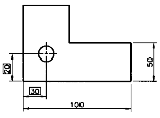
- 정사각형의 한변의 치수
- 참고치수
- 판 두께의 치수
- 이론적으로 정확한 치수
(정답률: 79%)
41. "가"부에 나타날 보조 투상도로 올바른 것은?
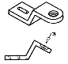
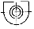
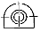
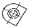
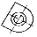
(정답률: 71%)
42. 기준점, 선, 평면, 원통 등으로 관련 형체에 기하 공차를 지시할 때 그 공차 영역을 규제하기위하여 설정된 기준을 무엇이라고 하는가?
- 돌출 공차역
- 데이텀
- 최대 실체 공차 방식
- 기준치수
(정답률: 54%)
43. 기어에서 이의 크기를 나타내는 방법이 아닌 것은?
- 원주피치
- 지름피치
- 이의 폭
- 모듈
(정답률: 40%)
44. 다음 중 CAD 시스템의 설명 중 그 단위가 틀리게 연결된 것은?
- 통신속도 - baud, bps
- 컴퓨터 기억용량 - byte, bit
- 디스플레이 성능 - dot pitch, pixel
- 플로터 성능 - dpi, MIPS
(정답률: 51%)
45. 가장 기본적인 도면 요소는?
- 점, 직선
- 원, 원호
- 점, 곡선
- 직선, 원
(정답률: 74%)
46. 다음 보기는 무엇에 대한 설명인가?
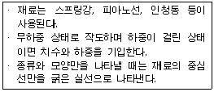
- 브레이크
- 평벨트 풀리
- 등가속 캠
- 스프링
(정답률: 78%)
47. 허용 한계치수에서 기준치수를 뺀 값을 무엇이라 하는가?
- 실치수
- 치수 허용차
- 치수 공차
- 틈새
(정답률: 52%)
48. 다음 중 억지 끼워 맞춤은?
- H7/h6
- F7/h6
- G7/h6
- H7/u6
(정답률: 56%)
49. 잇수 18, 피치원 지름 108인 스퍼기어의 모듈은?
- 2
- 4
- 6
- 8
(정답률: 81%)
50. CAD 시스템 중에서 데이터 저장 장치가 아닌 것은?
- 플로피 디스크
- 하드 디스크
- CD
- 태블릿
(정답률: 83%)
51. 면의 지시 기호에 있어서 각 지시 사항의 설명으로 틀린 것은?
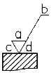
- a - 중심선 평균 거칠기의 값
- b - 컷 오프 값
- c - 다듬질 여유
- d - 줄무늬 방향기호
(정답률: 65%)
52. 제도 용지의 세로와 가로의 비는 얼마인가?
- 1 : 2
- 2 : 1
- 1 : 루트 2
- 1 : 루트 3
(정답률: 80%)
53. 완전 나사부와 불완전 나사부의 경계를 표시하는 선은?
- 가는 1점쇄선
- 가는 2점쇄선
- 굵은 실선
- 숨은선
(정답률: 68%)
54. 그림에서 암나사의 구멍을 도시한 것으로 맞는 것은?(오류 신고가 접수된 문제입니다. 반드시 정답과 해설을 확인하시기 바랍니다.)
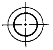
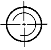
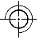
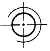
(정답률: 38%)
55. 구름 베어링의 호칭 번호에서 "6203 ZZ P6"의 설명 중 틀린 것은?
- 62: 베어링 계열 번호
- 03: 안지름 번호
- ZZ: 실드 기호
- P6: 내부 틈새 기호
(정답률: 63%)
56. 스프로킷 휠의 도시법에 대한 설명으로 옳은 것은?
- 바깥지름은 굵은실선, 피치원은 가는실선으로 그린다.
- 이뿌리원은 굵은실선 또는 가는파선으로 그린다.
- 축에 직각방향으로 본 그림을 단면으로 도시 할 때는 이뿌리선은 굵은실선으로 그린다.
- 항목표에는 톱니의 가공방법만 기입한다.
(정답률: 58%)
57. 45° 모따기를 나타내는 기호로 올바른 것은?
- C
- R
- □
- t
(정답률: 86%)
58. 다음 도면이 나타내는 단면도의 표시 방법은?
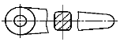
- 전 단면도
- 한쪽 단면도
- 회전 도시 단면도
- 부분 단면도
(정답률: 63%)
59. 줄무늬 방향 기호 중에서 가공 방향이 무방향이거나 여러 방향으로 교차할 때 기입하는 기호는?
- 〓
- X
- Ｍ
- Ｃ
(정답률: 66%)
60. 보스의 키홈 제도에 있어서 키홈의 가장 적당한 위치는?
- 도형의 아래쪽
- 도형의 위쪽
- 도형의 좌우
- 어떤 곳이라도 관계없다.
(정답률: 61%)